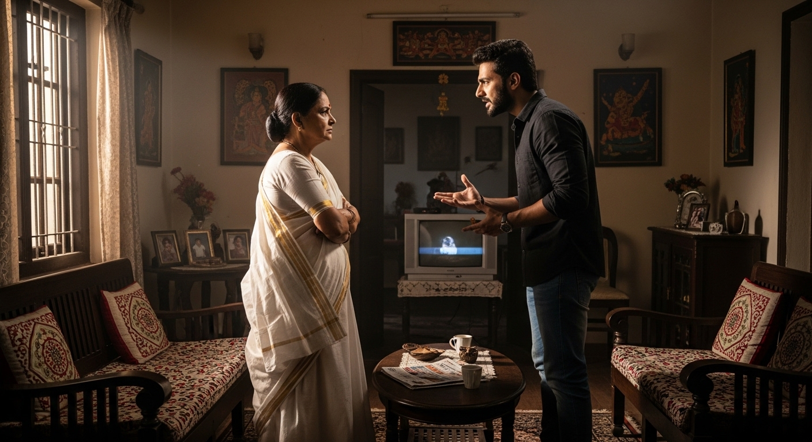
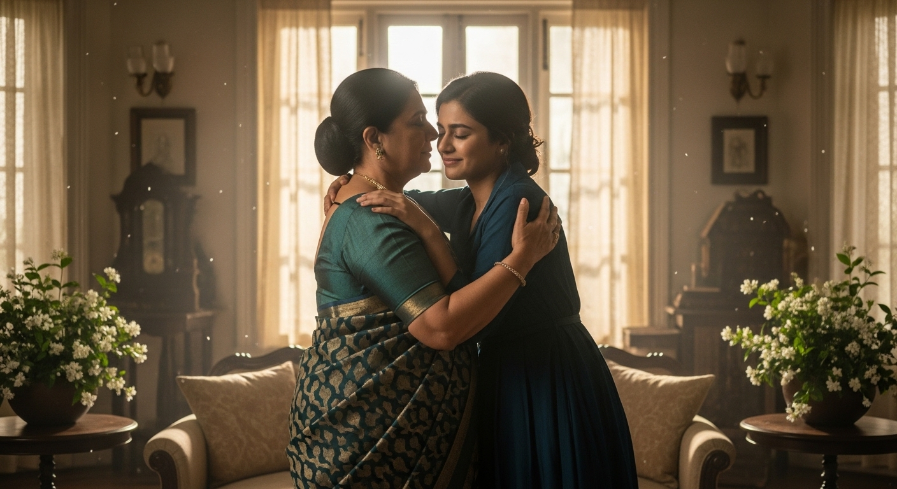

एकांकी का सारांश (Summary):
'संस्कार और भावना' एकांकी श्री विष्णु प्रभाकर द्वारा रचित एक पारिवारिक नाटक है। इस एकांकी का मुख्य विषय
एक मध्यवर्गीय रूढ़िवादी (Orthodox) हिंदू परिवार में पुरानी परंपराओं ('संस्कार') और नई पीढ़ी के स्वतंत्र
विचारों/परिवर्तनों ('भावना') के बीच का टकराव (Conflict) है। एकांकी में माँ (शास्त्रीय संस्कारों वाली) और
उसके बेटे अविनाश व बहू के बीच अंतर्जातीय विवाह (Inter-caste marriage) को लेकर उत्पन्न तनाव को दर्शाया
गया है। अंततः, मानवीय संवेदना और मातृ-प्रेम की विजय होती है और रूढ़िवादी संस्कारों की दीवार ढह जाती है।
1. एकांकीकार का परिचय (Author Introduction)
रचनाकार: विष्णु प्रभाकर (Vishnu Prabhakar)
विष्णु प्रभाकर जी हिंदी साहित्य के प्रसिद्ध नाटककार, एकांकीकार और कहानीकार हैं। उनके नाटकों में पारिवारिक
और सामाजिक समस्याओं का यथार्थ (Realistic) निरूपण मिलता है। उनकी भाषा सरल, स्वाभाविक और प्रभावपूर्ण है।
'संस्कार और भावना' उनकी एक श्रेष्ठ मनोवैज्ञानिक एकांकी है जो मानवीय मर्म और भावनाओं को गहराई से छूती है।
2. एकांकी के मुख्य पात्र (Main Characters)
- माँ: एक पुरानी पीढ़ी की रूढ़िवादी और धार्मिक विचारों वाली महिला। वह अपने पुराने
'संस्कारों' (परंपराओं/जातिगत भेदभाव) से बहुत गहराई से बँधी हुई है।
- अविनाश: माँ का बड़ा बेटा। वह नई पीढ़ी और प्रगतिशील विचारों का प्रतीक है। उसने परिवार
की इच्छा के विरुद्ध एक बंगाली लड़की (दूसरी जाति) से प्रेम विवाह किया है।
- उमा: माँ की बड़ी बहू (अतुल की पत्नी)। वह समझदार है और परिवार को जोड़े रखना चाहती
है। वह माँ और अविनाश के बीच की खाई को पाटने का काम करती है।
- अतुल: माँ का छोटा बेटा और उमा का पति।
- बंगाली बहू: अविनाश की पत्नी (जिससे माँ नफरत करती थी क्योंकि वह दूसरी जाति की है)।
3. एकांकी की प्रमुख घटनाएँ (Key Events)
- पारिवारिक अलगाव (Separation): माँ के रूढ़िवादी संस्कारों के कारण परिवार टूट चुका है।
माँ ने अपने बड़े बेटे अविनाश को उसके अंतर्जातीय विवाह (Inter-caste marriage) के कारण घर से निकाल दिया
है। माँ को लगता है कि दूसरी जाति की बहू के आने से उनके घर की पवित्रता और संस्कार छिन गए हैं।
- अविनाश की बीमारी: कुछ समय बाद उमा को पता चलता है कि अविनाश बहुत बीमार है (उसे
हैजा/कॉलरा हो गया है) और उसकी मृत्यु तक हो सकती थी। परंतु उसकी बंगाली पत्नी ने दिन-रात एक करके उसकी जान
बचाई है।
- माँ का अंतर्द्वंद्व (Inner Conflict): जब माँ को अविनाश की बीमारी का पता चलता है, तो
उनका मातृ-प्रेम (भावना) और उनकी पुरानी मान्यताएँ (संस्कार) आपस में टकराने लगते हैं। माँ अंदर से तड़प
उठती है कि उसका बेटा बीमार था और वह उसके पास नहीं थी।
- भावना की विजय (Triumph of Emotion over Orthodoxy): माँ को अंततः यह एहसास होता है कि
बंगाली बहू ने अपनी जान की परवाह किए बिना उनके बेटे (अविनाश) की जान बचाई है। माँ का हृदय परिवर्तन हो जाता
है। वह समझ जाती है कि सच्ची 'भावना' और 'मातृ-प्रेम' रूढ़ियों से बहुत बड़ा है। अंत में माँ अपनी बंगाली
बहू को स्वीकार करने के लिए अविनाश के घर चली जाती है।
4. महत्वपूर्ण कथन (Important Quotes)
"संस्कार जन्म से नहीं, कर्म से बनते हैं।"
= यह एकांकी का मूल संदेश है। कोई व्यक्ति सिर्फ उच्च जाति में जन्म लेने से संस्कारी नहीं हो जाता, बल्कि उसके
कर्म ही उसके असली संस्कार होते हैं, जैसे बंगाली बहू के सेवा-भाव और त्याग के कर्म।
"आदमी आदमी है, उसके बाद ही वह हिंदू, मुसलमान या ईसाई है।"
= अविनाश का यह कथन मानवीय एकता और प्रगतिशील 'भावना' को दर्शाता है। यह रूढ़िवाद और संकीर्णता पर सीधा प्रहार
है।
5. एकांकी का उद्देश्य (Theme)
- संस्कार बनाम भावना: एकांकी यह सिद्ध करती है कि मानव प्रेम, सहानुभूति और सेवा
('भावना') समाज की संकीर्ण रूढ़ियों और छुआछूत ('संस्कार') से बहुत महान हैं।
- अस्पृश्यता और जातिवाद का विरोध: लेखक ने यह स्पष्ट किया है कि अंतर्जातीय विवाह कोई
अपराध नहीं है। मनुष्य का चरित्र उसकी जाति से नहीं बल्कि उसके मानवीय गुणों से आँकना चाहिए।
- पीढ़ियों का वैचारिक अंतर (Generation Gap): कैसे पुरानी पीढ़ी की कठोरता से घर टूटते
हैं, और कैसे प्रेम और समझ से उन्हें वापस जोड़ा जा सकता है।

6. परीक्षा उपयोगी प्रश्न-उत्तर (Practice Zone)
प्रश्न 1: 'माँ' ने अविनाश को घर से क्यों निकाल दिया था?
उत्तर: माँ एक बहुत ही रूढ़िवादी, पुरानी विचारधारा और छुआछूत को मानने
वाली महिला थी। जब उनके बड़े बेटे 'अविनाश' ने उनके विरुद्ध जाकर एक बंगाली (विजातीय) लड़की से प्रेम विवाह
कर लिया, तो माँ को लगा कि इससे उनके कुल (वंश) की मर्यादा और घर की पवित्रता भंग हो गई है। अपने झूठे
सामाजिक 'संस्कारों' के अंधकार में फँसकर माँ ने अपने ही बेटे अविनाश और उसकी पत्नी को घर से निकाल दिया।
प्रश्न 2: "संस्कार और भावना का द्वंद्व" (Conflict) माँ के चरित्र में किस प्रकार दिखाई देता
है?
उत्तर: 'संस्कार' माँ की पुरानी सामाजिक मान्यताएँ (जाति-भेद, छुआछूत)
हैं, और 'भावना' उनका अपने बेटे अविनाश के प्रति 'मातृ-प्रेम' है। जब माँ को पता चलता है कि अविनाश हैजे
(कॉलरा) जैसी भयानक बीमारी से मृत्यु के कगार पर था, तो उनके अंदर का ममतामयी मातृ-हृदय चीत्कार कर उठता है।
वह बेचैन हो जाती है कि उस कठिन समय में वह अपने बेटे के पास नहीं थी। दूसरी ओर, जब उन्हें पता चलता है कि
जिस बंगाली बहू से वे नफरत करती थीं, उसी ने अपनी जान जोखिम में डालकर अविनाश की जान बचाई है, तो उनके
'रूढ़िवादी संस्कार' टूट जाते हैं और अंततः उनकी 'मातृ-भावना' की जीत होती है और वह बहू को स्वीकार कर लेती
हैं।
प्रश्न 3: एकांकी के शीर्षक 'संस्कार और भावना' की सार्थकता स्पष्ट कीजिए।
उत्तर: 'संस्कार और भावना' शीर्षक पूर्णतः सार्थक और उपयुक्त है। यह पूरी
एकांकी इन्हीं दो शब्दों के इर्द-गिर्द घूमती है। यहाँ 'संस्कार' का अर्थ अंधविश्वास, छुआछूत और थोपी गई
पुरानी सड़ी-गली परंपराएँ हैं (जिसका प्रतीक माँ है), जबकि 'भावना' का अर्थ है - प्रेम, दया, करुणा, अपनत्व
और मानवता (जिसका प्रतीक बंगाली बहू और अविनाश है)। एकांकीकार यह बताते हैं कि जब ये दोनों टकराते हैं, तो
इंसान के बनाए हुए झूठे रूढ़िवादी संस्कार हमेशा हारते हैं और मनुष्य के हृदय की सच्ची पवित्र 'भावना' और
'मानवता' की ही जीत होती है।